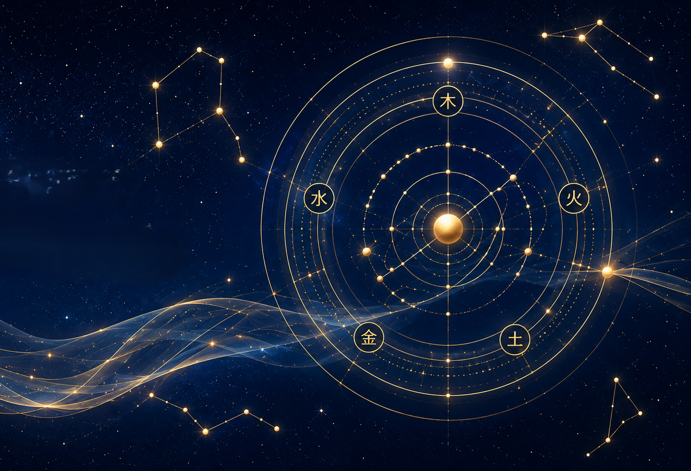

CAL Parent Scan
나를 이해하는 것에서 시작됩니다.
아이를 믿고 싶은데 자꾸 확인하게 되나요?
같은 말을 반복하고 있나요?
같은 걱정을 반복하고 있나요?
아이를 바라보는 렌즈일지도 모릅니다.
CAL Parent Scan은 아이를 분석하는 프로그램이 아닙니다.
아이를 통해 비춰지는 부모의 생각, 불안, 기대, 자동반응을 살펴보는
부모 렌즈 리포트입니다.
이런 경험이 있나요?
- 아이의 미래가 자꾸 걱정된다.
- 아이를 믿고 기다리는 것이 어렵다.
- 같은 말을 반복하게 된다.
- 아이의 행동에 감정이 크게 흔들린다.
- 아이를 위해 하는 말인데도 자꾸 갈등이 생긴다.
- 아이를 사랑하지만 조급함이 올라온다.
- 좋은 부모가 되고 싶은데 생각처럼 쉽지 않다.
Parent Scan을 통해 발견하는 것
Parent Scan은 아이를 고치기 위한 분석이 아니라, 아이를 바라보는 부모의 시선과 반복되는 반응을 이해하기 위한 과정입니다.
아이를 바라보는 나의 시선
왜 같은 행동도 어떤 부모는 기다리고, 어떤 부모는 걱정하게 되는지 살펴봅니다.
나도 모르게 반복되는 반응
잔소리, 조급함, 걱정, 통제. 반복되는 반응의 패턴을 발견합니다.
나를 흔드는 생각의 뿌리
아이의 행동보다 더 깊은 곳에서 나를 불안하게 만드는 생각을 살펴봅니다.
내가 자라온 경험의 영향
지금의 양육 방식이 어떤 경험과 연결되어 있는지 이해합니다.
앞으로 만들어가고 싶은 관계
아이를 바꾸기보다, 아이와 어떤 관계를 만들어가고 싶은지 돌아봅니다.

Parent Scan은 무엇이 다른가?
대부분의 부모 교육은 현재의 행동과 반응만을 살펴봅니다. CAL Parent Scan은 현재 반복되는 부모의 반응뿐 아니라, 부모가 세상을 바라보는 초기 입력 필터까지 함께 살펴봅니다.
우리는 이것을 사주OS라고 부릅니다. 사주는 운명이 아니라, 세상을 바라보는 처음 안경과 같습니다.
같은 상황에서도 어떤 부모는 걱정하고, 어떤 부모는 기다릴 수 있는 이유를 더 입체적으로 이해하는 데 도움을 줍니다. 단, 무엇을 선택할지는 언제나 부모 자신의 몫입니다.
이런 분께 추천합니다
- 아이를 더 깊이 이해하고 싶은 부모
- 반복되는 갈등을 줄이고 싶은 부모
- 아이를 믿고 기다리는 힘을 키우고 싶은 부모
- 아이를 통해 자신도 함께 성장하고 싶은 부모
- 내 반응의 이유를 차분히 살펴보고 싶은 부모
아직 이런 분께는 추천하지 않습니다
- 아이를 고쳐줄 방법만 찾고 있는 경우
- 부모 자신의 반응은 볼 생각이 없는 경우
- 정답이나 양육 기술만 원하는 경우
- 아이를 특정 유형으로 단정하고 싶은 경우
아이를 바꾸기 전에,
아이를 바라보는 나의 렌즈를 먼저 봅니다.
질문지는 아이를 평가하기 위한 것이 아닙니다. 부모 안에서 어떤 생각, 불안, 기대, 자동반응이 활성화되는지 살펴보기 위한 과정입니다.